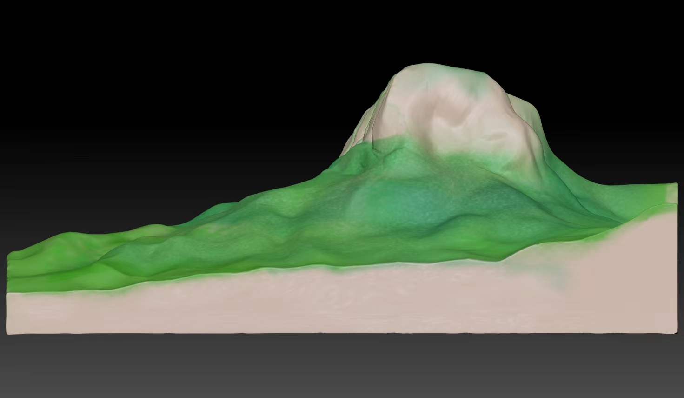

3d模型介绍
Three dimensional model introduction
3D打印技术在地质模型制作中的应用
3D打印技术在地质模型制作中扮演着至关重要的角色。地质模型是地质科学研究中的关键工具，它们帮助地质学家们更好地理解地球内部结构、地质过程以及资源分布情况。传统的地质模型制作通常需要花费大量时间和资源，而且受限于手工技能和材料的限制。但随着3D打印技术的进步，这一情况发生了改变。
通过3D打印技术，将地球表面的地形数据、地下地层结构等数字化信息转化为实体模型。这种数字化转化不仅提高了模型的准确性和精细度，还加快了制作过程。与传统手工模型相比，3D打印地质模型更具可定制性，能够快速调整尺寸、比例和细节，以满足不同研究需求。可以打印出具有断层、褶皱、岩石组成等细节的地质模型，从而更好地模拟地球的真实情况。这种高度逼真的模型有助于学者们进行地质事件的模拟和分析，进一步推动地质科学的发展。

3D打印技术在研学旅行中的互动体验
通过3D打印技术制作的地质构造模型可以让学生们亲手触摸、观察地球的各种地质结构，如地层、断层、岩石构造等。他们可以通过观察和比较不同地质构造的模型，更直观地理解地球演化的过程和地质学的原理。利用3D打印技术模拟各种地质景观，如峡谷、山峰、溪流等，为学生们提供了一个仿真的地质环境。他们可以在这些模拟的地质景观中探索、观察，感受地球的自然之美和地质之奥秘。
通过3D打印技术制作的互动体验装置可以让学生们参与到地质探索和学习中来。比如，地质演化模拟装置可以让学生们模拟地质运动的过程，了解地球表面的变化；化石挖掘装置可以让学生们体验挖掘化石的乐趣，感受科学探索的乐趣。
农业转型升级：鼓励农民采用先进的农业技术和管理模式，推动农业生产方式向绿色、有机、高效方向转变。